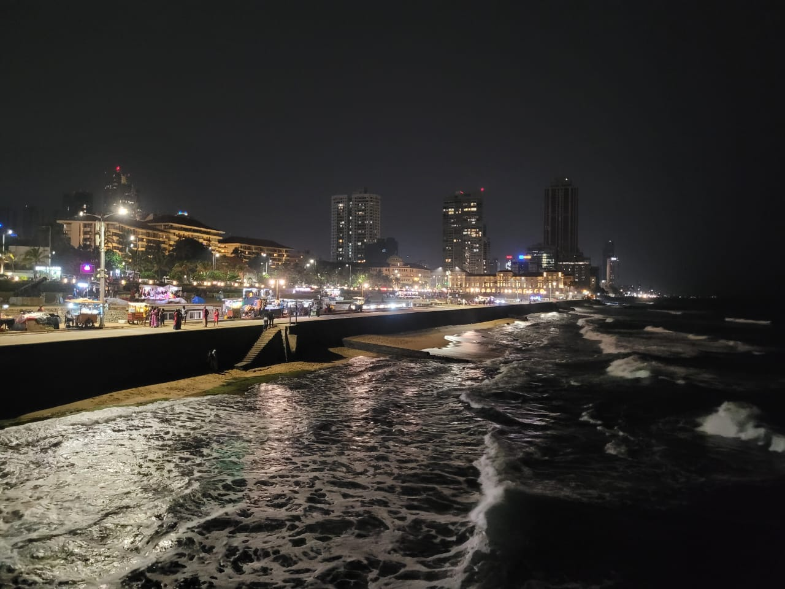
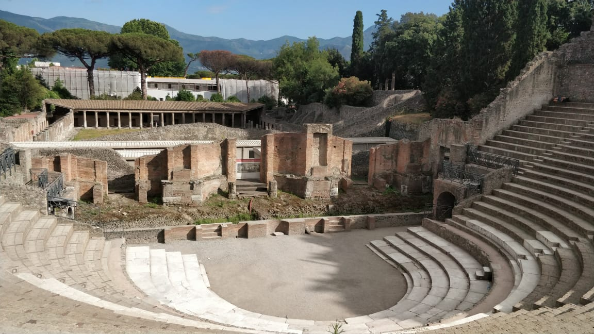
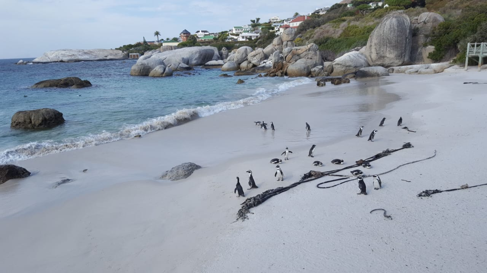

I get excited about a lot of things.
A typical vacation is not resting at home but a hike or a road trip! Having visited nine countries and almost
all parts of India, I love to indulge in history, food and culture. These are photos from the seaside in Colombo, Sri Lanka,
the ruins at Pompeii, Italy and adorable penguins in South Africa!



I love sports! Tennis was my first and favourite sport, but I also love football and Formula 1.
I had the opportunity to visit Germany during the Euros 2024, and the public viewings were a blast!
My music taste is usually rock and heavy metal! I adore the classics, Fleetwood Mac and Black Sabbath, occasionally drifting
into emo and folk rock. I write freestyle poetry in English, play badminton, sometimes sketch.
My personal causes are climate change and open science.
I wish to be a responsible citizen and someday, I would like to live in a world where we progress science and tech without compromising our environment.